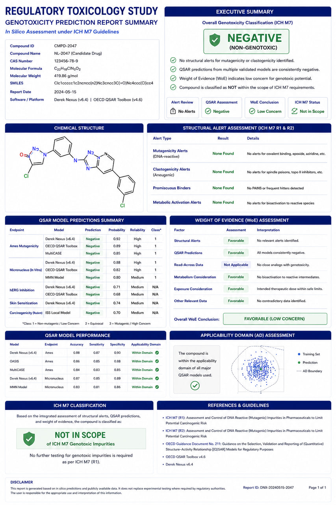

AI Somatic Mutation Prioritization
Deploying supervised machine learning models to score and rank somatic variants for clinical oncology trials.

The Challenge
Clinical oncology labs face a massive bottleneck when prioritizing somatic variants. Filter-based variant prioritization engines leave clinical researchers with hundreds of candidate mutations per patient, requiring hours of manual literature and database searches to identify actionable variants.
RASA's Technical Approach
RASA developed a supervised machine learning classifier (XGBoost) trained on curated clinical databases (ClinVar, COSMIC, CIViC). We engineered features combining multi-species conservation scores (phyloP, phastCons), structural protein perturbations derived from AlphaFold2 structural models, and cohort allele frequencies. The model was deployed as a containerized API (FastAPI) integrated directly into the clinical lab's diagnostic workflow.
Results & Biological Insights
The AI somatic mutation prioritization model scored and ranked variants in clinical oncology cohorts, reducing clinician review time from 6 hours to less than 45 minutes per patient. Furthermore, it identified critical actionable mutations in 18% of rare-cancer patients that had been missed by traditional hard-filter pipelines, significantly expanding patient options for targeted clinical trials.